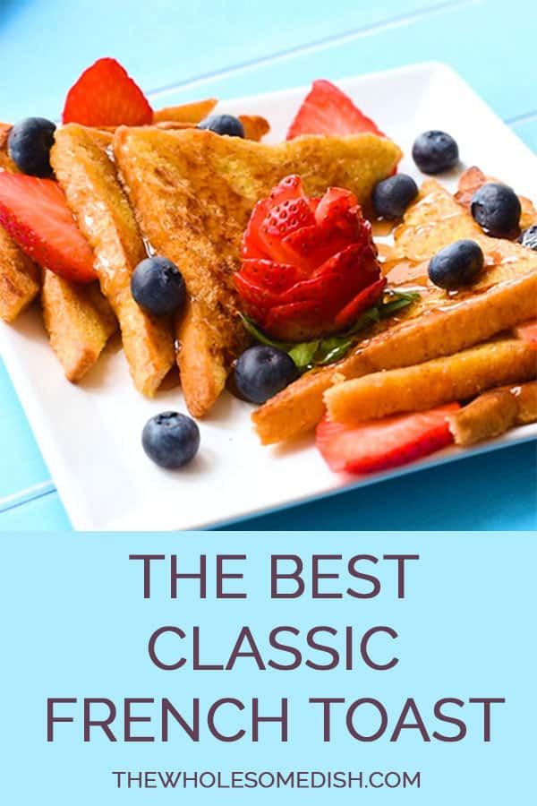

The Best Classic French Toast

Description
The Best Classic French Toast – This easy French toast recipe makes homemade fluffy french toast using a cinnamon batter and any type of bread you want.
Ingredients
- 3 large eggs
- 1/4 cup whole milk -or your preferred milk/milk alternative
- 2 tablespoons granulated sugar
- 1 teaspoon vanilla extract
- 1/2 teaspoon ground cinnamon
- 2 tablespoons unsalted butter for cooking
- 6 slices of bread -any kind of bread will work
- For topping: powdered sugar, maple syrup, fresh berries, etc.
Steps
- Add the eggs to a large bowl. Whisk until well scrambled.
- Add the milk, sugar, vanilla, and cinnamon. Whisk until well combined.
- If your mixing bowl isn't wide enough to fit a piece of bread, transfer the egg mixture to a shallow dish, such as a pie plate.
- Place a 12 inch skillet over medium-high heat for 2 minutes (a griddle would also work well for this). Then, reduce the heat to medium and add 1 tablespoon of butter.
- As the butter melts, use tongs to dip a piece of bread in the eggs to get it evenly coated in liquid and flip it over to coat both sides. Only let the bread soak in the eggs for about 2 seconds per side.** Let any excess liquid drip off of the bread, then place the bread in the skillet, fitting 3 pieces of bread in the skillet at a time.
- Cook until the bottom is golden brown, about 3 minutes. Use a spatula to flip the bread over and cook until the other side is golden brown, about 2 minutes.
- Repeat with the remaining butter and bread.
- Serve warm. Top with traditional french toast toppings like powdered sugar, maple syrup, fresh berries, etc.